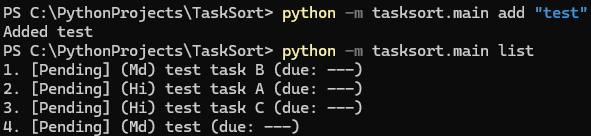

Hello. This is a collection of my projects. Click the links to see more details.

TaskSort is a CLI in Python for managing tasks with persistent storage with JSON, priorities, filters, sorting, and more.
Features: Add, rename, delete, and complete tasks; set due dates and priorities; and filter and sort tasks.
Technologies: Python, JSON, argparse, dataclasses
Example usage: python main.py add "Finish project A" --priority 1 --due "2026-02-28"